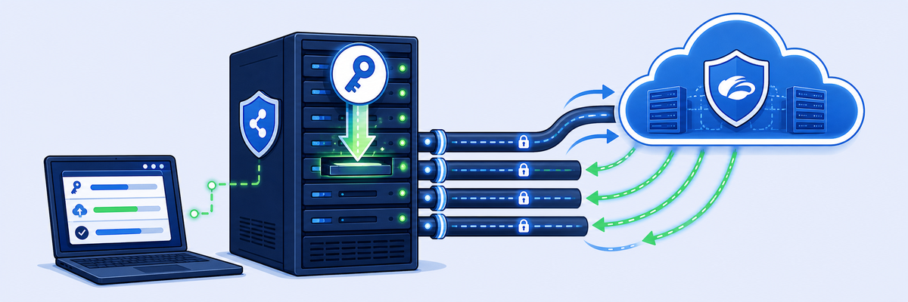

Lab 9: Provision ZPA Infrastructure
Scenario: Safemarch Corporation is preparing to launch internal applications and needs secure, policy-driven connectivity without exposing those applications to the internet. As a Zscaler administrator, you will deploy and provision ZPA App Connectors across data centers and cloud platforms. These App Connectors provide encrypted connectivity through the Zero Trust Exchange (ZTE) while keeping internal apps protected.
Objectives: By the end of this lab you will:
- Deploy and provision an App Connector using an OAuth-based token.
- Activate the App Connector so it can communicate securely with the ZPA infrastructure.
- Validate the connection and make sure the App Connector is working correctly.

The App Connector is ZPA's foothold next to your private apps. It only ever dials out to the Zero Trust Exchange, and nothing dials in.
- A traditional VPN concentrator sits in the DMZ listening for connections. The App Connector needs no inbound firewall rules at all. What does that change for an attacker scanning the internet?
- You create an App Connector Group (OnPrem) before enrolling any connector. Why group connectors at all, and why might you put two or more connectors in the same group?
- The enrollment token is short-lived and single-use, and you regenerate it by deleting
/opt/zscaler/var/*. Why is that safer than a long-lived shared key baked into an image?
In this task, you set up the App Connector side in the console by creating an App Connector Group to register the connector into the Zero Trust Exchange.
1 Access the Admin Portal
- On the Corp Client PC VM, sign in with the following credentials:
- Username:
student - Password:
Admin-123!
- Username:
2 Configure the App Connector Group
- In the Experience Center, go to Infrastructure > Private Access > App Connector Groups.
- Select +Add and enter the following values in Add App Connector Group:
- Name:
OnPrem - Status: Enabled
- Description: optional
- Signing Certificate: Connector
- Other Configurations: leave at their defaults
- App Connector Location: enter your current city
- Name:
- Select Save.
- Verify that the App Connector Group was created.
Note: Choose an App Connector location close to where you are.

Note: If the maintenance window warning appears, select "I understand" to continue with the configuration.
In this task, you activate the App Connector and confirm traffic can flow securely to ZPA.
1 Configure the App Connector
- Launch the Corp ZPA Connector VM.
- Log in to the Corp ZPA Connector VM by clicking SSH in the left side panel to log in automatically.
- Alternatively, use the CON options to sign in to the Corp ZPA Connector VM with these credentials:
- Username:
admin - Password:
Zscaler1!
- Username:
- To view the token, type:
cat /etc/issue

2 Regenerate a new authentication token from the CLI
- Stop the ZPA Connector service:
sudo systemctl stop zpa-connector - Switch to root user privileges:
sudo su - Delete the existing OAuth token files:
rm -rf /opt/zscaler/var/* - Restart the ZPA Connector service to generate the new OAuth token:
sudo systemctl start zpa-connector - To view the token, type:
cat /etc/issue
Caution: rm -rf /opt/zscaler/var/* wipes the connector's enrollment state. Type it carefully (use Actions → Send Text) and run it only on the Corp ZPA Connector VM.
3 Enter the token in the App Connector to deploy it
- In the Experience Center landing page (Corp Client PC), go to Infrastructure > Private Access > App Connectors.
- Select Add.
- Group: OnPrem (the App Connector Group you created in Task 9.1)
- Enrollment Tokens: add the token generated in Task 9.2, Step 2 (for example,
RPSTV-QZLJM). - Select Add.
- Select Save.
- Confirm that the App Connector appears in the list.
- Select the App Connector name to view its details, including Host OS, PSE, Location, IP addresses and Uptime.
Note: If the generated token doesn't work or has expired, repeat the previous steps (Step 2).

Note: The App Connector Connection Health may take about 30 seconds to change from Disconnected to Connected. Continue with the next lab task and check the status again shortly.

OnPrem (Enabled, Connector cert, your city). On the connector VM: cat /etc/issue shows the OAuth token, and stop → clear /opt/zscaler/var/* → start makes a fresh one. Paste it into App Connectors → Add, then wait ~30 s for Connected. Outbound-only: no inbound ports needed.